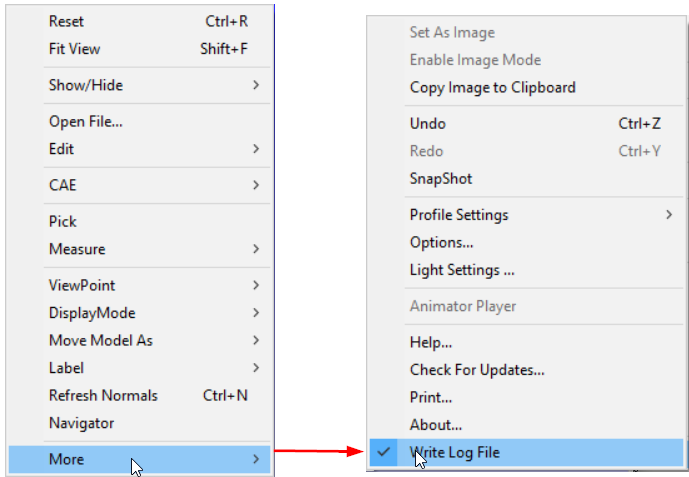
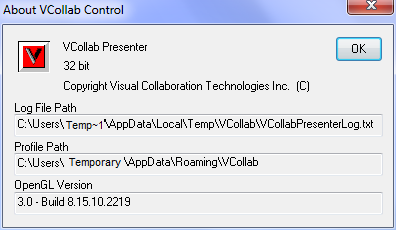
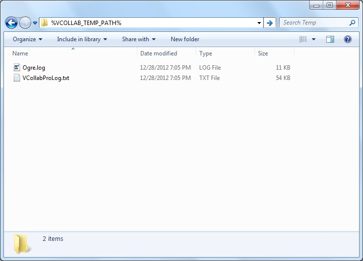
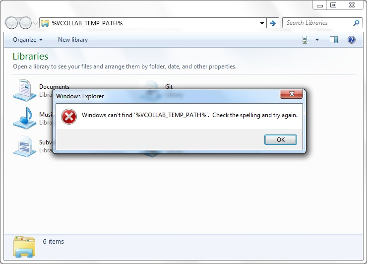

Log Files
VCollab Pro creates the following two log files.
- VCollabProLog.txt
- Ogre.log (Rendering log)
Note:
- By default, VCollab Pro writes log files into %TEMP%\VCollab folder.
- Users can change the location by setting the VCOLLAB_TEMP_PATH environment variable. File path should not contain Unicode characters.
- Users can control whether to write log files or not, using the context More | Write Log File.

Log File Path Display
Log file path will be displayed in More | About…| VCollab Control dialog for user convenience.

The log files are written into a folder represented by the VCOLLAB_TEMP_PATH environment variable, if VCOLLAB_TEMP_PATH is defined. Users can go to this folder by just entering %VCOLLAB_TEMP_PATH% in the windows explorer address bar as shown in the following figure.

The files VCollabProLog.txt and Ogre.log can be found in the folder. If the VCOLLAB_TEMP_PATH environment variable is not defined, the user will get an error message similar to the one shown in the following figure.

In such a case, VCollab Pro writes the log files into %TEMP%/VCollab directory. This folder can be opened by typing %TEMP%/VCollab into the address bar of windows explorer as shown below.

A new VCollab Pro session replaces the previous log files. Therefore these log files should be saved with another name for troubleshooting and in cases where users need to share them with the VCollab support team (*support@vcollab.com*).